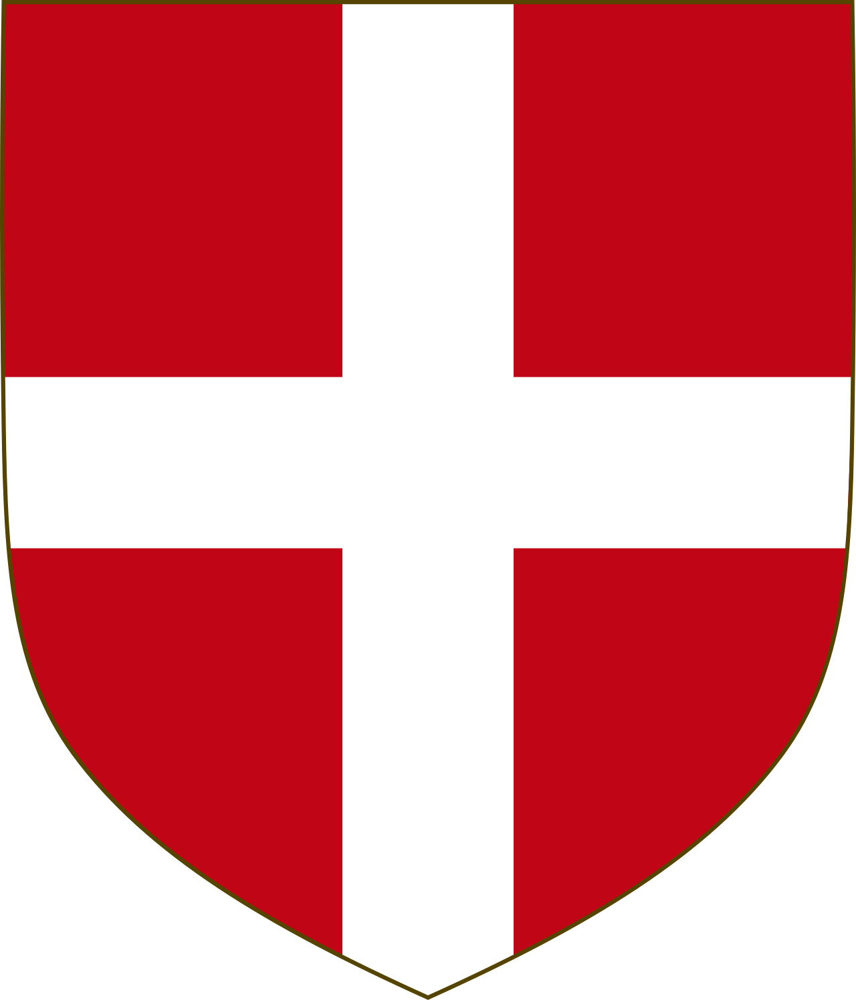

CityLoop Quest — Tropéa


Le Moyen Âge donne à Tropéa une grande partie de sa silhouette. Byzantins, Normands, Souabes, Angevins et Aragonais se succèdent dans une Calabre convoitée. La cathédrale du XIIe siècle rappelle le moment normand, lorsque de nouveaux pouvoirs réorganisent diocèses, forteresses et routes maritimes.
Sous les royaumes de Naples et de Sicile, la ville conserve un statut important. Sa position défensive, son évêché et ses familles patriciennes lui permettent de jouer un rôle régional. Les palais du centre témoignent de cette société où les lignages, les confréries et les institutions religieuses se partageaient l’influence.
Les séismes constituent une autre chronologie, brutale et incontournable. Celui de 1783 bouleverse l’ensemble de la Calabre méridionale. À Tropéa, bâtiments religieux et demeures sont réparés, reconstruits ou simplifiés. Une façade néoclassique peut ainsi cacher des caves ou des murs beaucoup plus anciens.
Le XIXe siècle apporte l’unification italienne, de nouveaux noms de rues et des transformations administratives. Le Corso Vittorio Emanuele inscrit le Risorgimento dans le plan de la ville, tandis que l’économie reste largement liée à l’agriculture, au commerce régional et à la mer.
Au XXe siècle, le chemin de fer et le tourisme modifient l’échelle de Tropéa. Les plages deviennent une ressource internationale, mais le centre historique échappe en grande partie aux grands bouleversements urbains. La ville actuelle vit donc d’un équilibre délicat entre patrimoine habité, activité touristique et préservation du littoral.